chapter10 - 파일 읽고 쓰기
우리는 지금껏 입력으로는 사용자가 입력하게 하는 방식을 사용하였고, 출력으로는 모니터 화면에 결과값을 출력하는 방식의 프로그래밍만 해 왔다.
하지만 입출력의 방법이 꼭 그것만 있는 것은 아니다.
이번에는 파일을 이용한 입출력 방법에 대해서 알아 볼 것이다.
먼저 파일을 새롭게 만들어서 프로그램에 의해서 만들어진 결과 값을 파일에 한번 적어보고, 또 적은 내용을 읽어보는 프로그램을 만드는 것으로 시작해 보자.
1.파일 생성하기
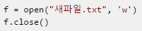
-> 파일을 생성하기 위해서 open이란 파이썬 내장함수를 사용하였다.
open 함수는 다음가 같이 파일이름과 파일 열기모드를 입력으로 받고
리턴값으로 파일 객체를 돌려준다.
*파일 열기 모드에는 다음과 같은 것들이 있다.
만약 ”새파일.txt"라는 파일을 C:/Python이란 디렉토리에 생성하고 싶다면 다음과 같이 해야 할 것이다.
f = open("C:/Python/새파일.txt", 'w')
f.close()
-> f.close()라는 것이 있는데 이것은 열린 파일 객체를 닫아주는 것이다.
사실 이 문장은 생략해도 된다. 왜냐하면 파이썬 프로그램이 종료할 때 열린 파일 객체를 자동으로 닫아주기 때문이다.
하지만 직접 열린 파일을 닫아주는 것이 좋다. 쓰기모드로 열었던 파일을 닫지 않고 다시 사용하려고 할 경우에는 에러가 나기 때문이다.
2. 파일을 쓰기 모드로 열어서 출력값 적기
예제10.1
f = open("새파일.txt", 'w')
for i in range(1, 11):
data = "%d 번째 줄입니다.\n" % i
f.write(data)
f.close()
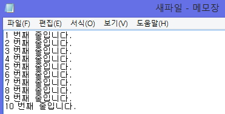
-> 위의 프로그램을 다음을 프로그램과 비교해보자
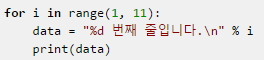
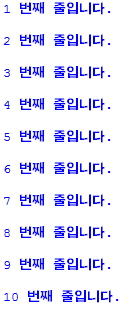
-> 두 프로그램의 서로 다른 점은 data를 출력시키는 방법이다.
두 번째 방법은 우리가 지금껏 계속 사용해 왔던 모니터 화면에 출력하는 방법이고 첫 번째 방법은 모니터 화면대신에 파일에 결과값을 적는 방법이다.
차이점이 금방 눈에 들어 올 것이다. 두번째 방법의 print대신에 파일객체 f의 write라는 함수를 이용했을 뿐이다. 첫 번째 예제를 에디터로 작성해서 실행시킨 다음 그 프로그램을 실행시킨 디렉토리를 살펴보면 ”새파일.txt"라는 파일이 생성되었음을 확인 할 수 있을 것이다.
3.파일을 읽는 여러가지 방법
(1)readline()을 이용하는 방법
예제10.2
f = open("새파일.txt", 'r')
line = f.readline()
print(line)
f.close()
-> 이전에 만들었던 "새파일.txt"를 수정하거나 지우지 않았다면 위의 프로그램을 실행시켰을 때 “새파일.txt"의 가장 첫 번째 줄을 읽어서 화면에 출력해 줄 것이다.
위 예제는 f.open("새파일.txt", 'r')로 파일을 읽기 모드로 연 후 readline()을 이용해서 파일의 첫번째 줄을 읽어 출력하는 예제이다.
예제10.3
f = open("새파일.txt", 'r')
while True:
line = f.readline()
if not line: break
print(line)
f.close()
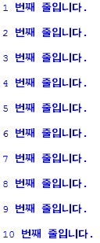
->while True라는 무한루프를 이용해서 f.readline()을 이용해서 파일을 계속해서 한 줄씩 읽어 들인다.
만약 더 이상 읽을 라인이 없으면 break가 수행되어 while문을 빠져나간다.
(f.readline()은 더 이상 읽을 라인이 없을 경우 None을 리턴한다.)
(2)readlines()를 이용하는 방법
예제10.4
f = open("새파일.txt", 'r')
lines = f.readlines()
for line in lines:
print(line)
f.close()
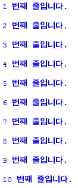
-> f.readlines()는 파일의 모든 라인을 읽어서 각각의 줄을 요소로 갖는 리스트를 리턴한다.
위의 예에서 lines는 [“1 번째 줄입니다.”,“2 번째 줄입니다.”, , , “10 번째 줄입니다.”]라는 리스트가 된다.
f.readlines()는 f.readline()과는 달리 's'가 하나 더 붙어 있음에 유의하도록 하자.
(3)read()를 이용하는 방법
예제10.5
f = open("새파일.txt", 'r')
data = f.read()
print(data)
f.close()
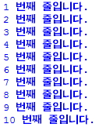
-> f.read()는 파일의 내용 전체를 문자열로 리턴한다. 따라서 위의 예의 data는 파일의 전체내용이다.
4.파일에 새로운 내용 추가하기
‘w’ 모드로 파일을 연 경우에는 이미 존재하는 파일을 열 경우 그 파일의 내용이 모두 사라지게 된다고 했는데 원래 있던 값을 유지하면서 단지 새로운 값만 추가해야 할 경우도 있다.
이런 경우에는 파일을 추가 모드('a')로 열면 된다.
예제10.5
f = open("새파일.txt",'a')
for i in range(11, 20):
data = "%d번째 줄입니다.\n" % i
f.write(data)
f.close()
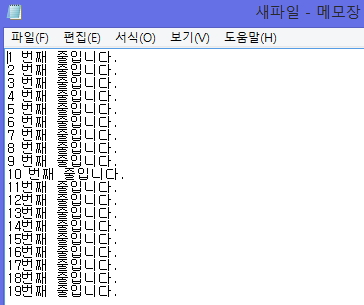
->위 예는 "새파일.txt"라는 파일을 추가모드('a')로 열고 write를 이용해서 결과값을 파일에 적는다.
여기서 추가 모드로 파일을 열었기 때문에 ”새파일.txt"라는 파일이 원래 가지고 있던 내용 바로 다음부터 결과값을 적기 시작한다.
“새파일.txt"라는 파일을 읽어서 확인해 보면 원래있던 파일 뒷부분에 새로운 부분이 추가 되었음을 확인 할 수 있을 것이다.
5.with문과 함께 사용하기
파일을 열면 위와 같이 항상 close해 주는 것이 좋은 스타일이다.
하지만 이렇게 파일을 열고 닫는 것을 자동으로 해 줄 수 있다면 편리하지 않겠는가?
파이썬의 with문이 바로 이런 역할을 해 준다.
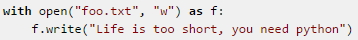
->with문을 이용하면 with 블록을 벗어나는 순간 열린 파일객체 f가 자동으로 close되게 되어 편리하다.
※ with문은 파일에만 쓰이는 것은 아니다. 보통 파일, 락, 연결등의 시스템 자원을 연결하고 해제할 경우 함께 사용된다.
6.sys모듈 입력
파이썬에서는 sys란 모듈을 이용하여 이것을 가능하게 한다.
sys라는 모듈을 쓰려면 아래의 예에서 같이 import sys처럼 import라는 명령어를 사용해야 한다.
예제10.6
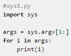
*위의 프로그램을 C:/Python이란 디렉토리에 저장하고 윈도우즈 도스창을 열고 다음과 같이 입력해 보자.
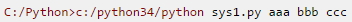
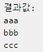
->sys모듈의 argv는 명령창에서 입력한 인수들을 의미한다.
즉, argv[0]는 파일 이름인 sys1.py가 되고 argv[1]부터는 뒤에 따라오는 인수들이 차례로 argv의 요소가 된다.
위의 예는 입력받은 인수들을 for문을 이용해 차례대로 하나씩 출력하는 예이다.
<출처> 점프 투 파이썬, 박응용(https://wikidocs.net/book/1)